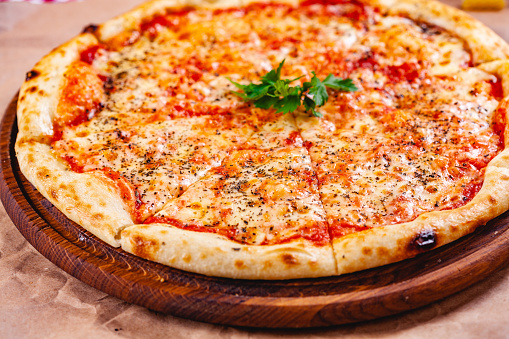

Margherita pizza

What is a Margherita pizza made of
Margherita pizza is made of cheese and tomato sauce, with
other key ingredients that are listed down below. What makes it
different from other pizzas is the fresh mozzarella cheese, which
contains more liquid than regular mozzarella.
Ingredients
The ingredients are as follows:
- 4 ounces of fresh mozzarella
- 1 ball of pizza dough
- Tomato sauce
- Olive oil
- 12 Basil leaves
- 2 garlic cloves, minced
- Salt & Pepper
Steps
- Cut the fresh mozzarella into slices and put it to the side
- Make the dough into the foundation for the pizza
- Place the tomato sauce into a bowl
- Put two spoons of olive oil into the bowl
- Add the minced garlic into the bowl
- Add the Salt & Pepper in the bowl
- Give the bowl a good mix
- Now we're ready to make the pizza: add the tomato sauce you mixed
on the pizza dough
- Distribute the basil leaves on top of the dough and sauce
- Distribute the fresh mozzarella slices on top of the dough and tomato sauce
- Put it in the oven, take it out & enjoy it! :)